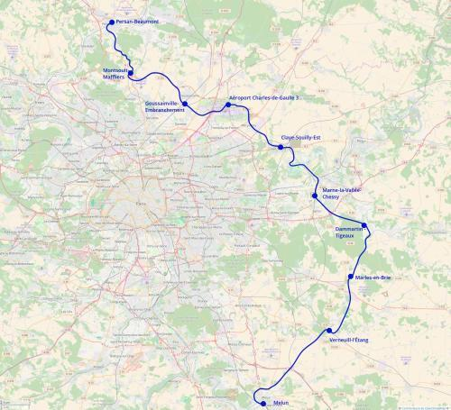

Tangentielle Seine-et-Marne
Melun - Persan-Beaumont
La tangentielle Seine-et-Marne est un projet de nouvel axe de transports pour se déplacer en grande banlieue à l'est de l'Île-de-France sans passer par Paris.
Partant de Melun, elle ferait le tour de l'agglomération melunaise par l'ouest sur un tracé partagé avec le tram-train de Melun. Le tracé longerait la nationale 36 jusqu'à Verneuil-l'Étang, gare de correspondance avec le RER F et le transilien P. Puis il continuerait sur l'itinéraire de l'ancienne ligne de de Verneuil à Marles-en-Brie et la ligne de Gretz à Sézanne ou il atteint Mortcerf et le triangle de Dammartin.
En utilisant une infrastructure nouvelle partagée avec le RER G, branche Coulommiers, on atteindrait Chessy-TGV puis on remonterait vers le nord en direction du pôle de Claye-Souilly via la base de loisirs de Jablines. De Claye-Souilly la ligne continuerait vers le Nord en direction de Mitry - Claye et de la gare aéroport Charles de Gaulle 3. Ensuite le tracé longerait la Francilienne pour atteindre Montsoult - Maffliers et continurait sur la ligne d'Epinay au Tréport vers la vallée de l'Oise et Persan - Beaumont, le terminus.
En connectant Melun à Chessy et à l'aéroport de Roissy, elle répondrait à un besoin de transports pour les habitants de la Seine-et-Marne.
Carte

Cliquer pour agrandir
Projets associés à cette ligne
- Tangentielle Seine-et-Marne
- Voir le tracé détaillé de la tangentielle avec la liste des stations et les correspondances.
- Tangentielle Seine-et-Marne Intérieure
- Tracé de la tangentielle Seine-et-Marne intérieure qui doit servir à soulager la Francilienne.
Si vous êtes intéressé par les projets associés à cette ligne (re-)partagez cette page sur les réseaux sociaux ou par courriel ou parlez-en autour de vous.
Si vous souhaitez travailler à la concrétisation de ces projets, passez à l'action et contactez nous.
Commenter